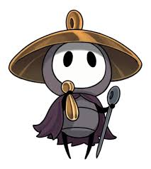
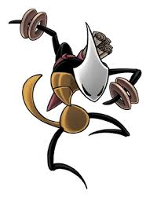
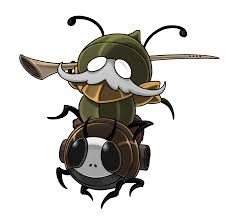
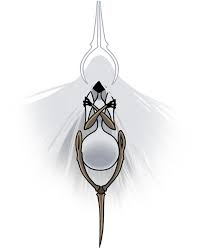
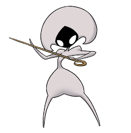

Home Story Characters
 Hornet
Hornet
Hornet is the main Character in Silksong and is who you play as. She is the daughter of Hera the beast, the queen of the weavers, and the pale king, the king of hallownest. She fights her way through Pharloom and to the citadel, seeking awnsers on why she was brought there.
 Sherma
Sherma is a small pilgrim on their journey towards the citadel, relying only upon guidance offered through faith. they sing their way up through pharloom believing that their song can help those in need.
 Shakra
Shakra is a warrior and a merchant in Silksong who sells you maps. she is part of an warrior tribe of bugs from the edge of pharloom, she wields throwing rings as weapon, which litter the ground near the places you can find her. She is on a quest to find her mentor who went missing. she can be heard singing in the background when you are near.
 Garmond & Zaza
Garmond & Zaza are a duo that will fight beside you during you pilgrimage. Garmond is the rider while Zaza is the mount. they can be found all around Pharloom and can fight beside you in multiple fights. Together they ride around on a quest to avenge their village that was claimed by the haunting.
 Grandmother Silk
Grandmother silk is the final boss of act 2. She is one of three pale beings such as the pale king and white lady from hollow knight. she is the primary source of silk in Pharloom and the cause of the haunting. she is the mother of all weavers and the creator of Lace.
 Lace
Lace is the child of Grandmother silk and one of the main bosses in silksong, she is the final boss in act 3 and you fight her in acts 1 and 2. She is woven entirely out of silk and trys to stop hornet from reaching the citadel's peak. She is taken over by the void in act three and you face of with her one last time before escaping the void holding her.